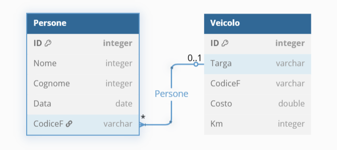
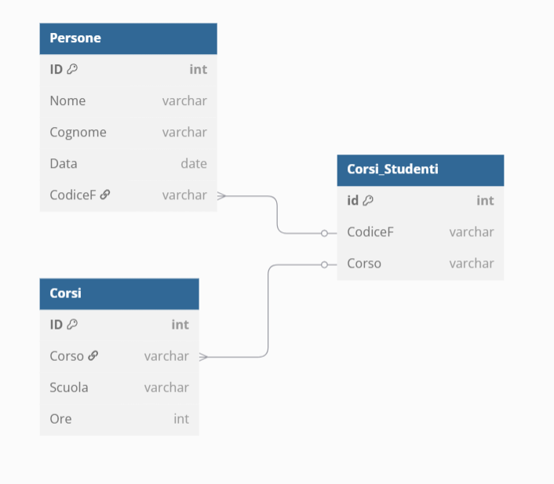

Introduzione ai Database
Un database è una collezione organizzata di dati, tipicamente memorizzati e accessibili elettronicamente da un sistema informatico.
I database relazionali organizzano i dati in tabelle con righe e colonne, con relazioni definite tra le tabelle.
Vantaggi dei database relazionali:
- Struttura dati organizzata
- Ridondanza ridotta
- Integrità dei dati
- Accesso efficiente
- Sicurezza
Creazione di Tabelle
Le tabelle sono la struttura fondamentale di un database relazionale. Ogni tabella rappresenta un'entità (es: clienti, ordini, prodotti).
Comando CREATE TABLE
CREATE TABLE nome_tabella (
colonna1 tipo_dati vincoli,
colonna2 tipo_dati vincoli,
...
vincoli_di_tabella
);Esempio pratico
CREATE TABLE clienti (
id INT PRIMARY KEY AUTO_INCREMENT,
nome VARCHAR(50) NOT NULL,
cognome VARCHAR(50) NOT NULL,
email VARCHAR(100) UNIQUE,
data_registrazione DATE DEFAULT CURRENT_DATE,
attivo BOOLEAN DEFAULT TRUE
);Vincoli comuni
| Vincolo | Descrizione |
|---|---|
| PRIMARY KEY | Identifica univocamente ogni record nella tabella |
| FOREIGN KEY | Mantiene l'integrità referenziale tra tabelle |
| NOT NULL | La colonna non può contenere valori NULL |
| UNIQUE | Tutti i valori nella colonna devono essere univoci |
| DEFAULT | Imposta un valore predefinito per la colonna |
| CHECK | Verifica che i valori soddisfino una condizione |
Tipi di Relazioni nei Database
Le relazioni definiscono come i dati in una tabella sono collegati ai dati in un'altra tabella.
Relazione Uno-a-Uno
(1:1)

Un record in una tabella è associato a un solo record in un'altra tabella.
Esempio:ogni persona ha una sola carta di identità
Relazione Uno-a-Molti (1:N)
Un record in una tabella può essere associato a molti record in un'altra tabella.
Esempio: Un cliente può effettuare molti ordini, ma ogni ordine è associato a un solo cliente.
Relazione Molti-a-Molti (N:M)
Molti record in una tabella possono essere associati a molti record in un'altra tabella.
Esempio: Uno studente può iscriversi a molti corsi e un corso può avere molti studenti iscritti.
Implementata tramite una tabella di join.
Esempio di implementazione
-- Relazione 1:N tra clienti e ordini
CREATE TABLE clienti (
id INT PRIMARY KEY,
nome VARCHAR(100)
);
CREATE TABLE ordini (
id INT PRIMARY KEY,
cliente_id INT,
data DATE,
FOREIGN KEY (cliente_id) REFERENCES clienti(id)
);
-- Relazione N:M tra studenti e corsi
CREATE TABLE studenti (
id INT PRIMARY KEY,
nome VARCHAR(100)
);
CREATE TABLE corsi (
id INT PRIMARY KEY,
titolo VARCHAR(100)
);
CREATE TABLE iscrizioni (
studente_id INT,
corso_id INT,
data_iscrizione DATE,
PRIMARY KEY (studente_id, corso_id),
FOREIGN KEY (studente_id) REFERENCES studenti(id),
FOREIGN KEY (corso_id) REFERENCES corsi(id)
);Query SQL
Le query SQL ci permettono di interagire con il database per recuperare, inserire, aggiornare ed eliminare dati.
Comandi SQL fondamentali
| Comando | Descrizione | Esempio |
|---|---|---|
| SELECT | Recupera dati da una o più tabelle | SELECT * FROM clienti; |
| INSERT | Aggiunge nuovi record a una tabella | INSERT INTO clienti (nome, email) VALUES ('Mario', 'mario@example.com'); |
| UPDATE | Modifica record esistenti | UPDATE clienti SET email = 'nuova@email.com' WHERE id = 1; |
| DELETE | Elimina record da una tabella | DELETE FROM clienti WHERE id = 1; |
| JOIN | Combina righe da due o più tabelle | SELECT ordini.* FROM ordini JOIN clienti ON ordini.cliente_id = clienti.id; |
| GROUP BY | Raggruppa righe che hanno gli stessi valori | SELECT paese, COUNT(*) FROM clienti GROUP BY paese; |
| ORDER BY | Ordina il risultato in ordine crescente o decrescente | SELECT * FROM prodotti ORDER BY prezzo DESC; |
Esempi avanzati
Query con JOIN
-- Recupera tutti gli ordini con i dettagli del cliente
SELECT ordini.id, ordini.data, clienti.nome, clienti.cognome
FROM ordini
INNER JOIN clienti ON ordini.cliente_id = clienti.id
WHERE ordini.data > '2023-01-01'
ORDER BY ordini.data DESC;Query con GROUP BY e funzioni di aggregazione
-- Calcola il totale degli ordini per ogni cliente
SELECT
clienti.id,
clienti.nome,
clienti.cognome,
COUNT(ordini.id) AS numero_ordini,
SUM(ordini.importo) AS totale_speso
FROM clienti
LEFT JOIN ordini ON clienti.id = ordini.cliente_id
GROUP BY clienti.id
HAVING COUNT(ordini.id) > 0
ORDER BY totale_speso DESC;Tipi di Dati nei Database
Ogni colonna in una tabella deve avere un tipo di dati specifico che definisce il tipo di valori che può contenere.
Numerici
- INT: Interi (-2,147,483,648 to 2,147,483,647)
- SMALLINT: Interi piccoli (-32,768 to 32,767)
- BIGINT: Interi grandi
- DECIMAL(p,s): Numeri esatti con precisione (p) e scala (s)
- FLOAT: Numeri approssimati a virgola mobile
Stringhe
- CHAR(n): Stringa a lunghezza fissa (n caratteri)
- VARCHAR(n): Stringa a lunghezza variabile (max n caratteri)
- TEXT: Stringa di lunghezza variabile molto grande
Data/Ora
- DATE: Data (YYYY-MM-DD)
- TIME: Ora (HH:MM:SS)
- DATETIME: Data e ora (YYYY-MM-DD HH:MM:SS)
- TIMESTAMP: Timestamp (secondi dall'epoch)
Booleani
- BOOLEAN: TRUE o FALSE
Binari
- BLOB: Dati binari di grandi dimensioni
- BINARY: Dati binari a lunghezza fissa
- VARBINARY: Dati binari a lunghezza variabile
Speciali
- JSON: Dati in formato JSON
- XML: Dati in formato XML
- ENUM: Lista di valori predefiniti
- SET: Insieme di valori predefiniti
Esempio di scelta dei tipi di dati
CREATE TABLE prodotti (
id INT PRIMARY KEY AUTO_INCREMENT,
nome VARCHAR(100) NOT NULL,
descrizione TEXT,
prezzo DECIMAL(10,2) NOT NULL,
quantita_disponibile INT DEFAULT 0,
data_aggiunta DATETIME DEFAULT CURRENT_TIMESTAMP,
in_offerta BOOLEAN DEFAULT FALSE,
specifiche JSON,
immagine BLOB
);Esercizio Guidato: Relazioni 1:1 e 1:N
In questo esercizio creeremo un database per gestire dipendenti e i loro uffici (relazione 1:1) e i progetti a cui lavorano (relazione 1:N).
Passo 1: Creazione tabella dipendenti
CREATE TABLE dipendenti (
id INT PRIMARY KEY AUTO_INCREMENT,
nome VARCHAR(50) NOT NULL,
cognome VARCHAR(50) NOT NULL,
email VARCHAR(100) UNIQUE,
data_assunzione DATE NOT NULL
);Passo 2: Creazione tabella uffici (relazione 1:1)
Ogni dipendente ha un solo ufficio e ogni ufficio è assegnato a un solo dipendente.
CREATE TABLE uffici (
id INT PRIMARY KEY AUTO_INCREMENT,
dipendente_id INT UNIQUE,
numero_ufficio VARCHAR(10) NOT NULL,
piano INT NOT NULL,
FOREIGN KEY (dipendente_id) REFERENCES dipendenti(id)
);Passo 3: Creazione tabella progetti (relazione 1:N)
Un dipendente può lavorare a molti progetti, ma ogni progetto ha un solo responsabile.
CREATE TABLE progetti (
id INT PRIMARY KEY AUTO_INCREMENT,
nome VARCHAR(100) NOT NULL,
descrizione TEXT,
data_inizio DATE NOT NULL,
data_fine DATE,
responsabile_id INT NOT NULL,
FOREIGN KEY (responsabile_id) REFERENCES dipendenti(id)
);Passo 4: Inserimento dati
-- Inserimento dipendenti
INSERT INTO dipendenti (nome, cognome, email, data_assunzione)
VALUES
('Mario', 'Rossi', 'm.rossi@azienda.com', '2020-05-15'),
('Luigi', 'Bianchi', 'l.bianchi@azienda.com', '2021-02-10'),
('Anna', 'Verdi', 'a.verdi@azienda.com', '2019-11-23');
-- Assegnazione uffici (1:1)
INSERT INTO uffici (dipendente_id, numero_ufficio, piano)
VALUES
(1, 'A101', 1),
(2, 'B205', 2),
(3, 'C310', 3);
-- Creazione progetti (1:N)
INSERT INTO progetti (nome, descrizione, data_inizio, data_fine, responsabile_id)
VALUES
('Sito Web', 'Sviluppo nuovo sito aziendale', '2023-01-10', '2023-06-30', 1),
('App Mobile', 'Sviluppo applicazione mobile', '2023-03-15', NULL, 1),
('Database', 'Migrazione database legacy', '2023-02-01', '2023-05-15', 2);Passo 5: Query di verifica
-- Verifica relazione 1:1
SELECT d.nome, d.cognome, u.numero_ufficio, u.piano
FROM dipendenti d
JOIN uffici u ON d.id = u.dipendente_id;| nome | cognome | numero_ufficio | piano |
|---|---|---|---|
| Mario | Rossi | A101 | 1 |
| Luigi | Bianchi | B205 | 2 |
| Anna | Verdi | C310 | 3 |
-- Verifica relazione 1:N
SELECT p.nome AS progetto, p.data_inizio,
d.nome AS responsabile, d.cognome
FROM progetti p
JOIN dipendenti d ON p.responsabile_id = d.id;| progetto | data_inizio | responsabile | cognome |
|---|---|---|---|
| Sito Web | 2023-01-10 | Mario | Rossi |
| App Mobile | 2023-03-15 | Mario | Rossi |
| Database | 2023-02-01 | Luigi | Bianchi |
Gestione degli Errori: Vincoli di Integrità Referenziale
Quando si lavora con relazioni tra tabelle, è importante comprendere come gestire gli errori che possono verificarsi quando si tenta di violare i vincoli di integrità referenziale.
Tentativo di eliminare una chiave correlata
Proviamo a eliminare un dipendente che è referenziato nella tabella progetti:
DELETE FROM dipendenti WHERE id = 1;Perché si verifica questo errore?
Il database sta proteggendo l'integrità dei tuoi dati. Se permettessi di eliminare un dipendente che è responsabile di uno o più progetti, questi progetti avrebbero un riferimento a un dipendente inesistente, creando un'orfanatura.
Soluzioni possibili
Opzione 1: Eliminare prima i record correlati
-- Prima elimina i progetti correlati
DELETE FROM progetti WHERE responsabile_id = 1;
-- Poi elimina il dipendente
DELETE FROM dipendenti WHERE id = 1;Opzione 2: Usare ON DELETE CASCADE
Puoi modificare la tabella progetti per specificare cosa succede quando un dipendente viene eliminato:
-- Prima elimina il vincolo esistente
ALTER TABLE progetti DROP FOREIGN KEY progetti_ibfk_1;
-- Poi ricrea il vincolo con ON DELETE CASCADE
ALTER TABLE progetti
ADD CONSTRAINT fk_responsabile
FOREIGN KEY (responsabile_id)
REFERENCES dipendenti(id)
ON DELETE CASCADE;Ora, quando elimini un dipendente, tutti i progetti di cui è responsabile verranno automaticamente eliminati:
DELETE FROM dipendenti WHERE id = 2;Opzione 3: Usare ON DELETE SET NULL
Se il campo responsabile_id fosse nullable, potresti usare:
ALTER TABLE progetti
MODIFY responsabile_id INT NULL;
ALTER TABLE progetti
ADD CONSTRAINT fk_responsabile
FOREIGN KEY (responsabile_id)
REFERENCES dipendenti(id)
ON DELETE SET NULL;In questo caso, eliminando un dipendente, il campo responsabile_id nei progetti correlati verrebbe impostato a NULL invece di eliminare i progetti.